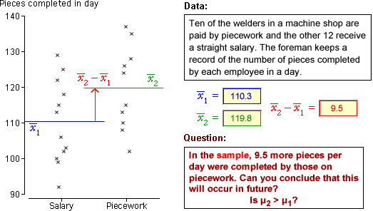
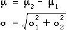
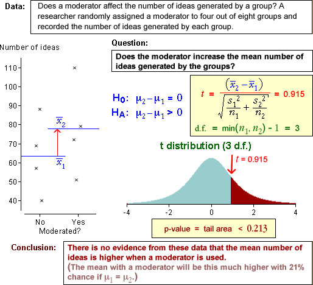
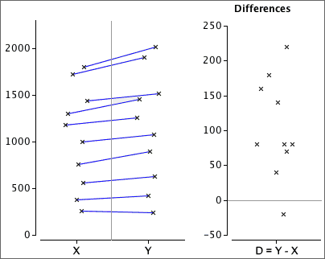
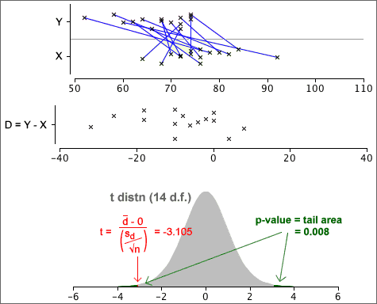
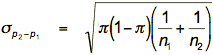
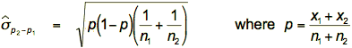
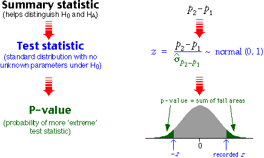
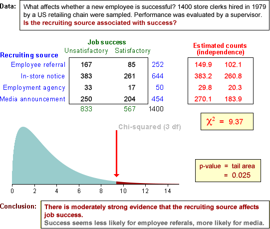

If you don't want to print now,
Data from two groups
When data are collected from two groups, we are usually interested in differences between the groups in general. The specific individuals are of less interest. Questions are therefore about the characteristics of the populations or processes that we assume underlie the data.
Example
The questions do not refer to the 16 specific subjects — they ask about whether anticipation of hypnosis affects the ventilation rate in general. We would like to use the answers to predict what will happen to other people.
Data and model
Data from two groups can be displayed with two histograms:

The diagram below illustrates a possible model for the data above.

Parameters
A normal model for two groups has four unknown parameters (the mean and standard deviation for each normal distribution). These parameters give considerable flexibility and allow the model to be used for a variety of different data sets.
(The number of parameters can be reduced to three if it is assumed that the two standard deviations are the same, but we will not consider this type of model here.)
Parameter estimates
A normal model for 2-group data involves 4 unknown parameters, µ1, µ2, σ1 and σ2. The means and standard deviations in the two samples provide objective estimates of the four parameters.

Comparing the populations
Although standard deviations in the two populations may also differ, we are usually most interested in the difference between the population means. Differences between the means can be expressed in terms of the model parameters with the following questions.
Randomness of sample difference
These questions are about µ2 - µ1 and the
best estimate of it is  .
However,
.
However,  cannot
give definitive answers since
it is random — it varies from sample to sample.
cannot
give definitive answers since
it is random — it varies from sample to sample.

Without an understanding of the distribution of  ,
it is impossible to properly interpret what the sample difference, 9.5 pieces,
tells you about the difference between the underlying population means.
,
it is impossible to properly interpret what the sample difference, 9.5 pieces,
tells you about the difference between the underlying population means.
Difference between two variables
If X1 has mean µ1 and standard deviation σ1, and X2 has mean µ2 and standard deviation σ2, then the mean and standard deviation of the difference, X1 - X2, are

This is not a typo. The variance of X1 - X2 is the sum of the variances of X1 and X2.
Requirement of independence
The above formula for the standard deviation is only true if X1 and X2 are independent of one another.It is important to know that the two variables are independent before using the above formula for the standard deviation of their difference.
Difference between means
The difference between any two independent quantities X1 and X2 has a distribution with

Applying this to the difference between the means of two random samples,

Irrespective of the distributions within the
two groups,

Estimation error
The difference between the sample means,  ,
is a point estimate of the difference between the means of the underlying populations, µ2 - µ1.
In order to properly interpret it, we must understand the distribution of
the estimation error.
,
is a point estimate of the difference between the means of the underlying populations, µ2 - µ1.
In order to properly interpret it, we must understand the distribution of
the estimation error.
| is a point estimate of µ2 - µ1 |
Replacing σ12 and σ22 by s12 and s22 gives an approximate error distribution,

The standard deviation of these errors is the standard error of the estimator.
Examples

Our best estimate is that healthy companies have a mean assets-to-liabilities ratio that is 0.902 higher than that of failed companies. From the error distribution, the error in this estimate is unlikely to be more than about 0.3.
Testing for a difference between two means
The difference between two groups that is of most practical importance is a difference between their means.
H0 : μ2 − μ1 = 0
HA : μ2 − μ1 ≠ 0
The summary statistic that throws most light on these hypotheses is the difference
between the sample means,  .
Testing therefore involves assessment of whether this difference is unusually
far from zero.
.
Testing therefore involves assessment of whether this difference is unusually
far from zero.

As with all other hypothesis tests, a p-value near zero gives evidence that the null hypothesis does not hold — evidence of a difference between the group means.
Example

General properties of p-values
A statistical hypothesis test cannot provide a definitive answer about whether two groups have different means. The randomness of sample data means that p-values are also random quantities.
It is possible to get a small p-value (supporting HA) when H0 is true, and it is possible to get a large p-value (consistent with H0) when HA is true.
There is some chance of being misled by an 'unlucky sample.
Effect of increasing the sample size
One- and two-tailed tests for differences
In a two-tailed test, the alternative hypothesis is that the two population means are different. A one-tailed test arises when we want to test whether one mean is higher than the other (or lower than the other).

Test statistic, p-value and conclusion
Consider a test for the hypotheses,
H0 : μ1 = μ2
HA : μ1 > μ2
The alternative hypothesis is only supported by very small values of  .
This also corresponds to small values of the test statistic t ,
so the p-value is the lower tail probability of the t distribution.
.
This also corresponds to small values of the test statistic t ,
so the p-value is the lower tail probability of the t distribution.

A small p-value is interpreted as giving evidence that H0 is false, in a similar way to all other kinds of hypothesis test.
Examples

Properties of p-values
We again stress that a statistical hypothesis test cannot provide a definitive answer. The randomness of sample data means that p-values are also random quantities, so there is some chance of us being misled by an 'unlucky' sample:
Paired data
When two types measurements, X and Y, are made from each individual (or other unit), the data are called bivariate. Sometimes the two measurements are of closely related quantities and may even describe the same quantity at different times.
When the sum or difference of X and Y is a meaningful quantity, the data are called paired data.
Hypotheses of interest
For paired data, We often want to test whether the means of the two variables are equal,
H0 : μX = μY
HA : μX ≠ μY
Sometimes a one-tailed test is required, such as
H0 : μX = μY
HA : μX > μY
Examples
Differences
Information about the difference between the means of X and Y is contained in the values D = (Y - X) for each individual. The hypotheses
H0 : μX = μY
HA : μX ≠ μY
can then be expressed as
H0 : μD = 0
HA : μD ≠ 0
This reduces the paired data set to a univariate data set of differences, D, and reduces questions about (µY - µX) to questions about the mean of D.
Analysis of paired data
By taking differences between Y and X, much of the variability between the individuals is eliminated, making it easier to see whether their means are different. The example below shows paired data on the left with blue lines joining the x- and y-values in each pair. The differences on the right make it clearer that the y-values are usually higher than the corresponding x-values.

Approach (paired t-test)
Testing whether two paired measurements, X and Y, have equal means is done in terms of the differences
D = Y - X
The test is then expressed as
H0: µD = 0
HA: µD ≠ 0
or a one-tailed variant. The hypotheses are therefore assessed with a standard univariate t-test using test statistic

This is compared to a t distribution with n - 1 degrees of freedom to find the p-value.
Example
The diagram below illustrates a 2-tailed test for equal means, based on n = 15 paired observations.

From the p-value, we conclude that there is very strong evidence that the means for Y and X are different.
Choice between paired data or two independent samples
It is sometimes possible to answer questions about the difference between two means by collecting two alternative types of data.
If the individuals in the 2 groups can be paired so that the pairs are relatively similar, a paired design gives more accurate results.
Matched pairs in experiments
In experiments to compare two treatments, it may be possible to group the experimental units into pairs that are similar in some way. These are called matched pairs. If the two experimental units in each pair are randomly assigned to the two treatments, the data can be analysed as described in this section.
The difference between the treatments is estimated more accurately than in a completely randomised experiment.
Two groups of successes and failures
We now consider data that are obtained as random samples from two populations, with the sampled individuals being categorised into successes and failures.

Since our model involves only two parameters, π1 and π2, the two groups are the same only if π2 - π1 = 0. The value of π2 - π1 is usually unknown but can be estimated by p2 - p1. However p2 - p1 is a random quantity so its variability must be taken into account when interpreting its value.
Example

Note that the questions do not refer to the specific 100 managers in the study. They ask about differences between male and female managers 'in general'.
We are interested in π2 - π1 rather than p2 - p1, so we need to understand the accuracy of our point estimate.
Equal population proportions (probabilities)?
If π1 and π2 are proportions in two populations and the corresponding sample proportions are p2 and p1, we usually first ask whether π1 and π2 are equal and this is based on how far (p2 - p1) is from zero. The values of (p2 - p1) that would be consistent with equal population means depends on its distribution.
Distribution of p2 - p1 (when π1 = π2)
In a test for whether π1 and π2 are equal, the null hypothesis is
H0 : π1 = π2
If H0 is true, we can write π1 = π2 = π, the distribution of p2 - p1 has the following properties:

Standard deviation in practice
To obtain a numerical value for the standard deviation above, we must replace π by an estimate — the overall proportion in the combined samples, p.

Two-tailed test
H0 : π1 = π2
HA : π1 ≠ π2
For this test, the steps involved in obtaining a p-value are:

The p-value is interpreted in the same way as for all previous tests. A p-value close to zero is unlikely when H0 is true, but is more likely when HA holds. Small p-values therefore provide evidence of a difference between the population probabilities.
One-tailed test
In a 1-tailed test, the alternative hypothesis is
HA : π1 − π2 > 0 or HA : π1 − π2 < 0
The test statistic is identical to that for a 2-tailed test and the p-value is obtained in a similar way, but it is found from only a single tail of the standard normal distribution.
Two-tailed example
One-tailed example
Assessing independence from a sample
Independence is an important concept, but it is defined in terms of the joint population probabilites and in most practical situations these are unknown. We must assess independence from a sample of individuals — a contingency table.
Example
The contingency table below categorises a sample of 214 individuals by gender and some other characteristic (possibly weight group or grade in a test).
| Male | Female | Total | |
|---|---|---|---|
| A | 20 | 60 | 80 |
| B | 9 | 84 | 93 |
| C | 2 | 39 | 41 |
| Total | 31 | 183 | 214 |
Is this consistent with a model of independence of the characteristic and gender? (Are the probabilities of A, B and C grades the same for males and females?)
Estimated cell counts under independence
To assess independence, we first find the pattern of cell counts that is most consistent with independence in a contingency table with the observed marginal totals.
| Male | Female | Total | |
|---|---|---|---|
| A | ? | ? | 80 |
| B | ? | ? | 93 |
| C | ? | ? | 41 |
| Total | 31 | 183 | 214 |
The pattern that is most consistent with independence has the following estimated cell counts:

where n denotes the total for the whole table and nx and ny denote the marginal totals for row x and column y.
Applying this to our example gives the following table:
| Male | Female | Total | |
|---|---|---|---|
| A |  |
80 | |
| B | 93 | ||
| C | 41 | ||
| Total | 31 | 183 | 214 |
Comparison of observed and estimated cell counts
We test for independence with the hypotheses:
H0 : X and Y are independent
HA : X and Y are dependent
The test asks whether the observed and estimated cell counts are 'sufficiently close' — are the observed counts consistent with the counts estimated under independence?
| Male | Female | Total | |
|---|---|---|---|
| A | 20 (11.59) |
60 (68.41) |
80 |
| B | 9 (13.47) |
84 (79.53) |
93 |
| C | 2 (5.94) |
39 (35.06) |
41 |
| Total | 31 | 183 | 214 |
Possible test statistic?
A simple summary of how close the observed counts, nxy, are to the estimated cell counts, exy, is the sum of the squared differences,

Unfortunately this would be a bad test statistic — its distribution depends not only on the numbers of rows and columns in the table, but also on the number of individuals classified — the overall total for the table.
A better test statistic
The following χ2 (pronounced chi-squared) statistic has much better properties than the raw sum of squares on the previous page

Its distribution only depends on the number of rows and columns in the contingency table.
Distribution of chi-squared statistic
When there is independence, the χ2 statistic for a contingency table with r rows and c columns has approximately a standard distribution called a chi-squared distribution with (r - 1)(c - 1) degrees of freedom.
The mean of a chi-squared distribution equals its degrees of freedom and it is skew. Some examples are given below for contingency tables of different sizes:

Testing for independence
H0 : X and Y are independent
HA : X and Y are dependent
The following test statistic is used:

P-value

The p-values is interpreted in the same way as for other hypothesis tests — it describes the strength of evidence against the null hypothesis:
| p-value | Interpretation |
|---|---|
| over 0.1 | no evidence against the null hypothesis (independence) |
| between 0.05 and 0.1 | very weak evidence of dependence between the row and column variables |
| between 0.01 and 0.05 | moderately strong evidence of dependence between the row and column variables |
| under 0.01 | strong evidence of dependence between the row and column variables |
Warning about low estimated cell counts
The χ2 test statistic has only approximately a chi-squared distribution. The p-value found from it can be relied on if:
If the cell counts are small enought that these conditions do not hold, the p-value is less reliable. (But advanced statistical methods are required to do better!)
Examples


Contingency tables and groups
Contingency tables can either arise from bivariate categorical data or from univariate categorical data that is recorded separately from several groups.
The chi-squared test assesses independence in bivariate data. The same test can also be used to compare the different groups if there is grouped data.
Example
